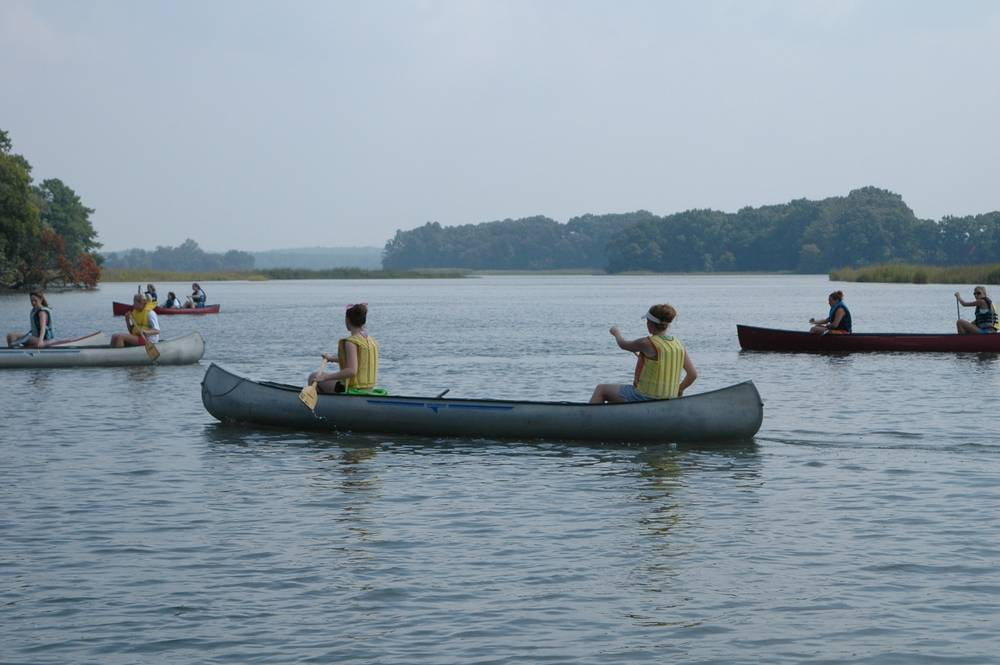
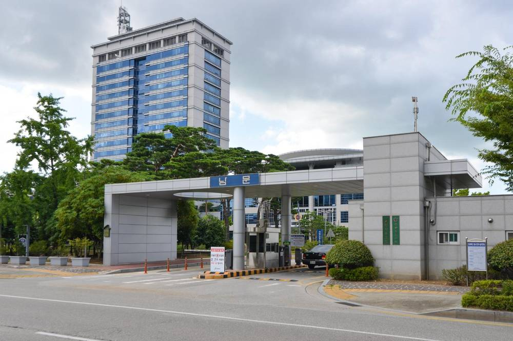
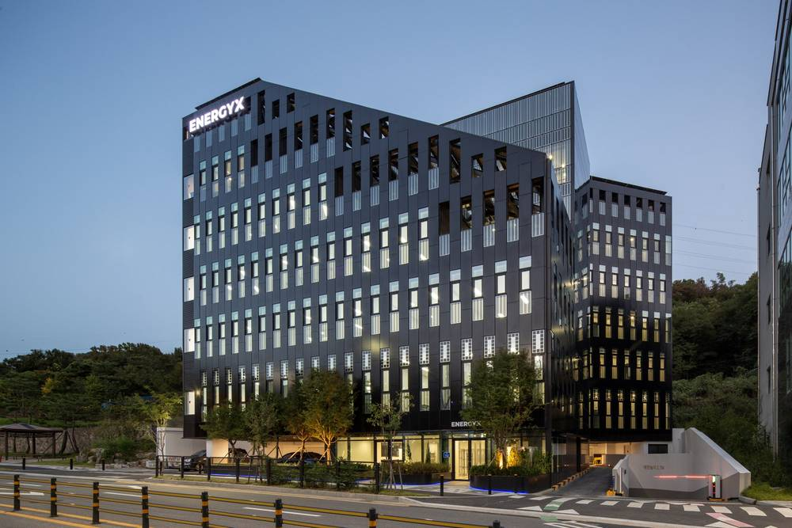
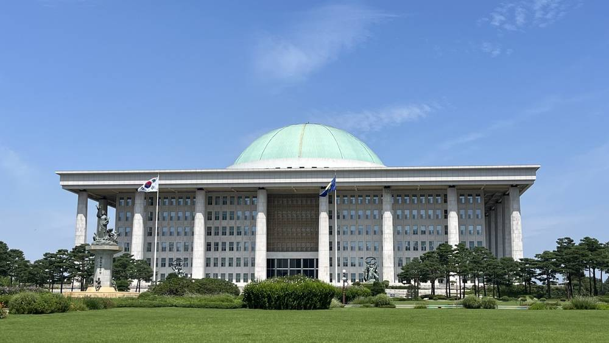
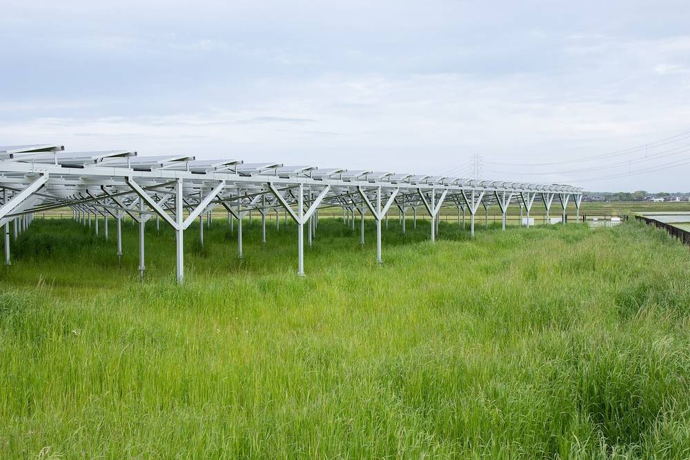
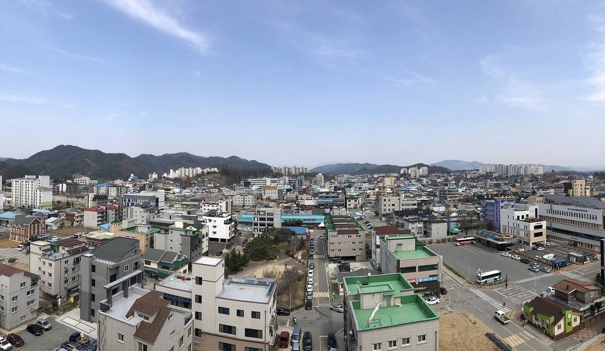
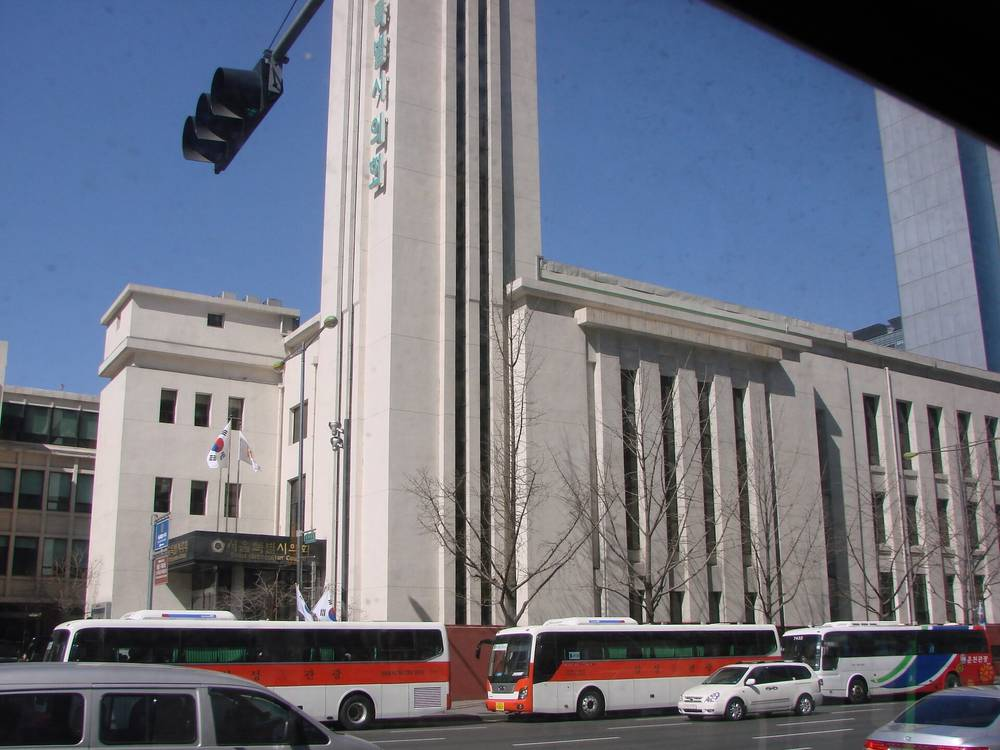
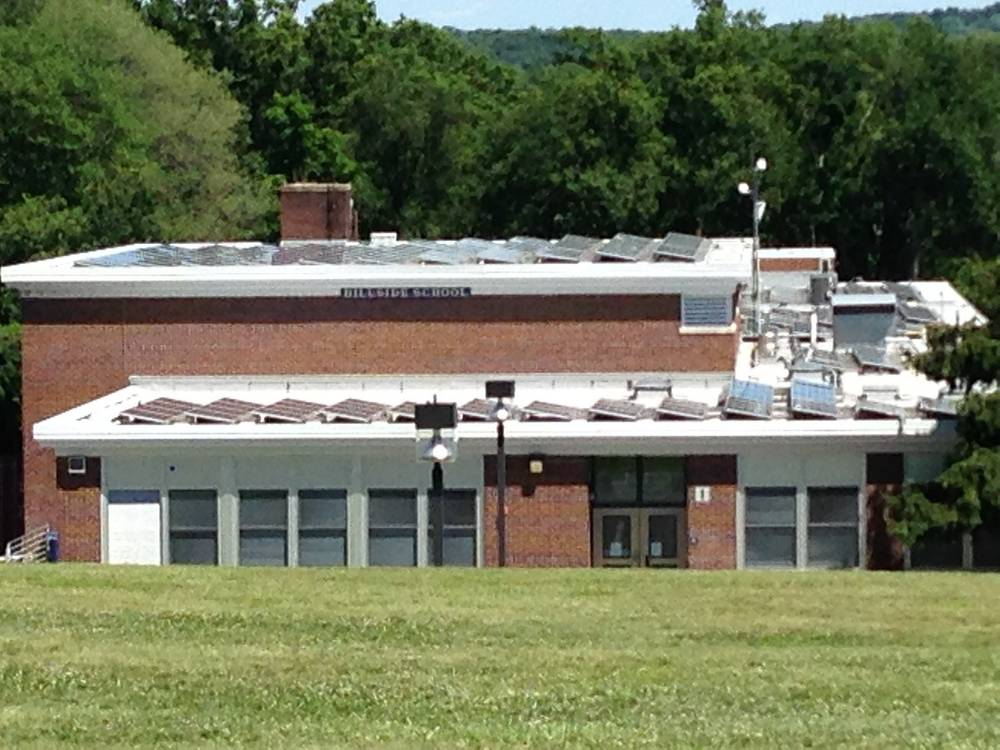
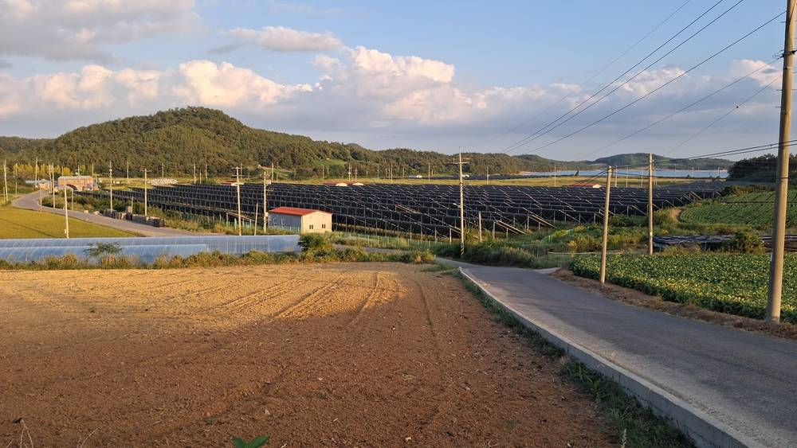

美 래퍼해녹 부족, 옛 수도 터 교육관에 지붕 태양광…원주민 기업이 보조금 신청부터 설치까지 무료로
12.32kW·패널 28장, 가동 뒤 2MWh 가까이 생산…설치비는 '부족 태양광 가속 기금'에서


공공건축물 그린리모델링 의무화 앞두고 제외 대상 정한다…국방·문화유산·안전등급 D 이하 등
국토부, 녹색건축물법 시행령 개정안 12월 22일까지 입법예고…2027년 3월 9일 의무화와 함께 시행

국회 과방위, 내년 과기정통부 예산 1조3,000억여 원 증액 의결…출연연 인건비·AI 사업 늘려
방미통위·우주항공청·원안위 예산도 순증, 예결위 심사 거쳐 확정…법정 처리시한 12월 2일
오늘 주목할 소식
- 야구대표팀, APBC 일본전 5-9 패…김휘집 8회 동점 3점포에도 한일전 12연패
- 김수현 측, 광고주에 11억 원 정산 1심 판결 불복해 항소…"사이버 렉카에 날개 달아주는 결과"
- 충남 학교 태양광 발전량 자료 '들쭉날쭉'…8개월 실적이 1년 치보다 36% 많거나 '0'으로 제출
- 한성숙 총리 "좋은 지방정부 정책 전국으로"…신안 이익공유제·영광 햇빛·바람 기본소득 대표 사례로 꼽아
- 산불·산사태 우려 땐 시·군·구가 주민대피계획 의무 수립…산불 과태료 상한 300만 원으로
- 건보공단 특사경 법안, 법사위 전체회의 16일로 연기…의료계 "철회" vs 공단 "재정 누수 막아야"
햇빛소득마을 더보기 ›
정치 더보기 ›
공공건축물 그린리모델링 의무화 앞두고 제외 대상 정한다…국방·문화유산·안전등급 D 이하 등
국토부, 녹색건축물법 시행령 개정안 12월 22일까지 입법예고…2027년 3월 9일 의무화와 함께 시행
정책 더보기 ›
공공건축물 그린리모델링 의무화 앞두고 제외 대상 정한다…국방·문화유산·안전등급 D 이하 등
국토부, 녹색건축물법 시행령 개정안 12월 22일까지 입법예고…2027년 3월 9일 의무화와 함께 시행
산업·경제 더보기 ›
美 애너하임 시영 전력, 태양광 150MW·배터리 138.5MW 20년 구매 계약…약 9억5,500만 달러
시의회 7대0 승인, 약 7만5,000가구분…배터리 성능 3개월 연속 90% 밑돌면 대금 안 내
사회 더보기 ›
충남 학교 태양광 발전량 자료 '들쭉날쭉'…8개월 실적이 1년 치보다 36% 많거나 '0'으로 제출
도의회 교육위 행감서 홍북초·서남초 등 지적…교육지원청 "인버터 표시창 고장, 발전은 정상"
지역 더보기 ›
전북도, 꽉 막힌 계통 뚫으려 ESS·가상발전소 기업과 손잡는다…"햇빛소득마을도 접속이 관건"
LS일렉트릭·한전 전북본부 등과 사업모델 간담회, 송·변전설비·ESS 확충 과제는 국가계획 반영 건의
오피니언 더보기 ›
"햇빛소득마을 3,000곳의 30배"…황우현 교수, 전국 동·리 10만 곳 '자립형 에너지 타운' 제안
타운마다 1MW씩 2035년 100GW…"5,700세대 단지 검토서 자립률 최대 80%, 가구당 연 60만~100만 원 수익공유"
시민에너지 더보기 ›
美 래퍼해녹 부족, 옛 수도 터 교육관에 지붕 태양광…원주민 기업이 보조금 신청부터 설치까지 무료로
12.32kW·패널 28장, 가동 뒤 2MWh 가까이 생산…설치비는 '부족 태양광 가속 기금'에서
햇빛소득마을 더보기 ›
수원햇빛발전㈜ 밑그림 나왔다…공영주차장 13곳 5MW부터 20MW·328억 원, 공공 배당은 기후대응기금으로
수원시·수원도시공사·에너지협동조합 참여, 시민펀드로 이익 나눠…16일 수원시의회서 창립설명회
米ラッパハノック族、旧首都跡の教育施設に屋根置き太陽光…先住民企業が助成申請から設置まで無償で
12.32kW・パネル28枚、稼働後約2MWhを発電…費用は「部族太陽光加速基金」から




忠清南道の学校太陽光、発電量データに「ばらつき」…8カ月分が1年分より36％多い、または「0」で提出
道議会教育委の行政監査で洪北小・西南小などを指摘…教育支援庁「インバーター表示窓の故障、発電は正常」

韓成淑首相「優れた自治体政策を全国へ」…新安の利益共有制・霊光の太陽光・風力ベーシックインカムを代表例に
国会「参よい地方自治政策大会」の祝辞で「太陽光所得村とともに拡大」…19自治体が成果発表
太陽光所得村 もっと見る ›
政治 もっと見る ›
韓成淑首相「優れた自治体政策を全国へ」…新安の利益共有制・霊光の太陽光・風力ベーシックインカムを代表例に
国会「参よい地方自治政策大会」の祝辞で「太陽光所得村とともに拡大」…19自治体が成果発表
政策 もっと見る ›
韓成淑首相「優れた自治体政策を全国へ」…新安の利益共有制・霊光の太陽光・風力ベーシックインカムを代表例に
国会「参よい地方自治政策大会」の祝辞で「太陽光所得村とともに拡大」…19自治体が成果発表
産業・経済 もっと見る ›
米アナハイム市営電力、太陽光150MW・蓄電池138.5MWの20年購入契約…約9億5,500万ドル
市議会が7対0で承認、約7万5,000世帯分…蓄電池性能が3か月連続90%を下回れば代金支払わず
社会 もっと見る ›
忠清南道の学校太陽光、発電量データに「ばらつき」…8カ月分が1年分より36％多い、または「0」で提出
道議会教育委の行政監査で洪北小・西南小などを指摘…教育支援庁「インバーター表示窓の故障、発電は正常」
地域 もっと見る ›
全北道、飽和した送電網の解消へESS・仮想発電所企業と連携…「太陽光所得村も接続が鍵」
LSエレクトリック・韓電全北本部などと事業モデル懇談会、送変電設備・ESS拡充を国家計画に反映するよう建議
オピニオン もっと見る ›
「日差し所得村3,000カ所の30倍」…黄祐鉉教授、全国の洞・里10万カ所に「自立型エネルギータウン」を提案
タウンごとに1MW、2035年に100GW…「5,700世帯団地の検討で自立率最大80%、世帯あたり年60万〜100万ウォンの収益共有」
市民エネルギー もっと見る ›
米ラッパハノック族、旧首都跡の教育施設に屋根置き太陽光…先住民企業が助成申請から設置まで無償で
12.32kW・パネル28枚、稼働後約2MWhを発電…費用は「部族太陽光加速基金」から
太陽光所得村 もっと見る ›
「水原ひだまり発電」の青写真…公営駐車場13カ所5MWから20MW・328億ウォン、公共の配当は気候対応基金に
水原市・水原都市公社・エネルギー協同組合が参加、市民ファンドで利益分配…16日に市議会で設立説明会
阳光收入村 更多 ›
政治 更多 ›
韩成淑总理：“好的地方政策推向全国”…以新安收益共享制、灵光阳光·风力基本收入为代表案例
在国会“参好地方自治政策大会”致辞称“与阳光收入村一同扩大”…19个地方政府发表成果
政策 更多 ›
韩成淑总理：“好的地方政策推向全国”…以新安收益共享制、灵光阳光·风力基本收入为代表案例
在国会“参好地方自治政策大会”致辞称“与阳光收入村一同扩大”…19个地方政府发表成果
产业·经济 更多 ›
美国阿纳海姆市营电力签下光伏150MW、储能138.5MW 20年购电合同…约9.55亿美元
市议会7比0通过，约7.5万户用电量…电池性能连续3个月低于90%则不付款
社会 更多 ›
忠清南道学校太阳能发电量数据“忽高忽低”…8个月产量比全年多36%，或干脆报“0”
道议会教育委员会行政监察点名洪北小学、西南小学等…教育支援厅称“逆变器显示屏故障，发电正常”
地方 更多 ›
全北道携手储能与虚拟电厂企业破解电网饱和…“阳光收入村也卡在并网”
与LS电气、韩电全北本部等召开商业模式座谈会，建议将输变电设施与储能扩建纳入国家规划
评论 更多 ›
“阳光收入村3,000个的30倍”…黄祐铉教授提议在全国10万个洞、里建设“自立型能源镇”
每镇1MW，2035年达100GW…“5,700户小区研究显示自给率最高80%，每户每年可分享60万至100万韩元收益”
市民能源 更多 ›
美国拉帕汉诺克部落在故都旧址教育中心屋顶装太阳能…原住民企业从申请补助到安装全程免费
12.32kW、28块板，投运后发电近2MWh…费用来自“部落太阳能加速基金”
阳光收入村 更多 ›
“水原阳光发电”蓝图出炉…从13处公营停车场5MW起步，规模20MW、328亿韩元，公共分红纳入气候应对基金
水原市、水原城市公社与能源合作社参与，以市民基金分享收益…16日在市议会举行创立说明会
Rappahannock Tribe puts rooftop solar on education lodge at its ancestral capital — Native-owned firm handled grants to installation at no cost
A 12.32 kW, 28-panel system has produced nearly 2 MWh since start-up; funding came from a tribal solar accelerator fund
- Sunlight Income VillageHoengseong County now has five sunlight income villages as three more join in second round
South Chungcheong school solar output records found erratic — eight months exceeding a full year by 36%, or reported as zero
Provincial council audit flags several schools; education office says one inverter display was broken but generation was normal
PM Han: good local policies should go nationwide — cites Sinan's profit-sharing and Yeonggwang's solar-wind basic income
Speaking at a National Assembly local-government policy contest, she said they are spreading alongside the solar income village programme
Today's highlights
- Jeonbuk turns to batteries and virtual power plants to unclog its saturated grid — 'solar income villages also hinge on connection'
- Suwon Haetbit Power takes shape: 5MW on 13 public car parks first, 20MW and 32.8 billion won in total, with public dividends going to a climate fund
- Haman County to put solar on three public car parks, with its local public corporation building and running them by 2030
- KEPCO passes 100 grid siting decisions, up from 25 a year to 58, including first substation requested by residents
- Jeju councillor asks where pledged 10 GW of offshore wind and 1 trillion won energy basic income went, demands island-wide benefit roadmap
- Incheon to put 5.7 MW of solar on two water treatment plants under public-private agreement
Sunlight Income Village More ›
- Suwon Haetbit Power takes shape: 5MW on 13 public car parks first, 20MW and 32.8 billion won in total, with public dividends going to a climate fund
- Hoengseong County now has five sunlight income villages as three more join in second round
- South Jeolla-Gwangju council: Sunlight income villages need support after selection, not just at launch
Politics More ›
PM Han: good local policies should go nationwide — cites Sinan's profit-sharing and Yeonggwang's solar-wind basic income
Speaking at a National Assembly local-government policy contest, she said they are spreading alongside the solar income village programme
- Jeju councillor asks where pledged 10 GW of offshore wind and 1 trillion won energy basic income went, demands island-wide benefit roadmap
- Jeju presents 2035 carbon-neutral goal at COP31, pledges to return renewable profits to residents
- Taiwan renewable alliance rates local election candidates' energy resilience pledges; only 18 of 45 respond
- Ahead of Korea's agrivoltaics act on Dec. 17, farm ministry plans per-person capacity cap to stop outside 'land-grabbing'
Policy More ›
PM Han: good local policies should go nationwide — cites Sinan's profit-sharing and Yeonggwang's solar-wind basic income
Speaking at a National Assembly local-government policy contest, she said they are spreading alongside the solar income village programme
- Jeju presents 2035 carbon-neutral goal at COP31, pledges to return renewable profits to residents
- Ahead of Korea's agrivoltaics act on Dec. 17, farm ministry plans per-person capacity cap to stop outside 'land-grabbing'
- Korea's farm ministry to unveil crop list and per-farm caps for agrivoltaics by end of November
- Korea to tax Sunlight Income Village solar land separately for property tax, from January 2027
Industry & Economy More ›
Anaheim's city-owned utility signs 20-year deal for 150 MW of solar and 138.5 MW of batteries, worth about $955 million
Council approves 7-0; enough for about 75,000 homes, with no battery payment if performance falls below 90% for three straight months
- Hampyeong pushes Bitgreen national industrial complex as RE100 pilot and Korea's first renewable self-reliant city
- North Jeolla, home to 39,312 solar plants, on alert over regional wholesale power pricing; generators' joint committee to rally on Nov. 25
- Daegwallyeong Wind Farm, Backed by 10.8 Billion Won of Gangwon Province Assets, Earns Only 300 Million Won a Year; Provincial Councillors Call for Review of Economics and Harm to Residents
- Is Surplus Daytime Power From Rooftop Solar on SH Rental Estates Cutting Tenants' Fees? Seoul Councillor Oh Jung-seok Demands Net-Billing Data and a Conversion Plan by End of December
Society More ›
South Chungcheong school solar output records found erratic — eight months exceeding a full year by 36%, or reported as zero
Provincial council audit flags several schools; education office says one inverter display was broken but generation was normal
- KEPCO passes 100 grid siting decisions, up from 25 a year to 58, including first substation requested by residents
- Rural Australians back clean energy but want a real say and a fair share, study of three NSW towns finds
- More compensation for grid lines, but residents say KEPCO-led siting must change first
- Is Surplus Daytime Power From Rooftop Solar on SH Rental Estates Cutting Tenants' Fees? Seoul Councillor Oh Jung-seok Demands Net-Billing Data and a Conversion Plan by End of December
Regions More ›
Jeonbuk turns to batteries and virtual power plants to unclog its saturated grid — 'solar income villages also hinge on connection'
Province meets LS Electric, KEPCO's Jeonbuk office and others; will ask for substation and storage upgrades in national plans
- Haman County to put solar on three public car parks, with its local public corporation building and running them by 2030
- Incheon to put 5.7 MW of solar on two water treatment plants under public-private agreement
- Japanese J1 club Mito HollyHock farms and generates on abandoned land, supplying 30% of a roadside station's power
- Seoul Energy Corp. returns to profit but customer satisfaction slips to 79.4; council member urges more parking-lot solar
Opinion More ›
'30 times the 3,000 sunlight income villages': professor proposes 100,000 self-reliant energy towns across Korea
1MW per town for 100GW by 2035; review of a 5,700-household complex shows up to 80% self-sufficiency and 600,000 to 1 million won a year per household
- Column | How Far Have Renewables Come at Dangjin Steel? "Responsibility Must Be Proven by Installed Capacity, Not Completion Photos"
- "Let residents without a roof share in solar savings": op-ed urges West Virginia to pass community energy law
- Draft agrivoltaics decree limits agricultural corporations' role; op-ed argues "open a path to work with specialist firms"
- Farm-press column calls "sunlight income villages" an unproven policy, warns of token cooperatives and reliance on outside firms
Citizen Energy More ›
Rappahannock Tribe puts rooftop solar on education lodge at its ancestral capital — Native-owned firm handled grants to installation at no cost
A 12.32 kW, 28-panel system has produced nearly 2 MWh since start-up; funding came from a tribal solar accelerator fund
- Imsil launches 'energy zone' committee for 150 MW of solar to boost residents' income — some call for an action plan first
- German village energy co-op in Saerbeck grows from 380 to 574 members in a year, raises 3 million euros for new wind
- UK's government-backed Net Zero Hub: community energy lets people 'take ownership of energy'
- Spain's Santa Pola launches local energy community with 200kW on school and sports hall roofs, covering up to half the power of 200 homes and shops
Sunlight Income Village More ›
Suwon Haetbit Power takes shape: 5MW on 13 public car parks first, 20MW and 32.8 billion won in total, with public dividends going to a climate fund
City, Suwon Urban Corporation and energy co-ops join; citizens share profits through a fund — founding briefing at city council on Nov. 16
- Hoengseong County now has five sunlight income villages as three more join in second round
- South Jeolla-Gwangju council: Sunlight income villages need support after selection, not just at launch
- Korea says conditionally selected Sunlight Income Villages will get help to break ground; storage scheme to be tendered in November, grid priority for resident solar under 1MW from end-December
- 126 'Sunshine Income Villages' in South Jeolla–Gwangju Face Heavy Upfront Costs From Storage Conditions; Councillor Calls for Sites on Disused Roads, Embankments and Rail Land